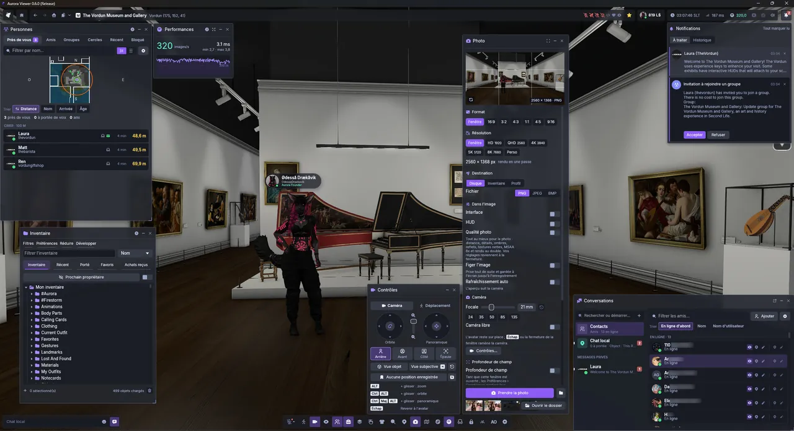
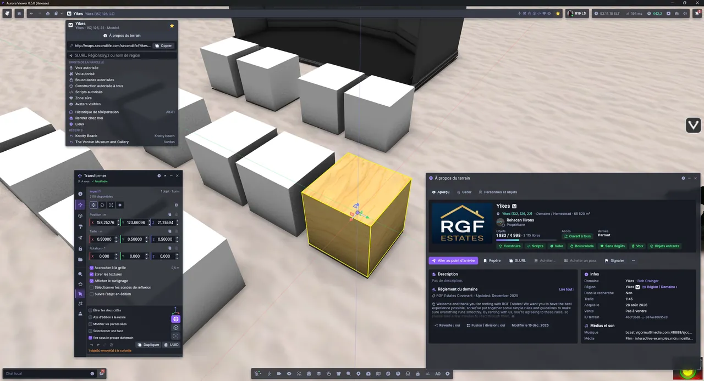
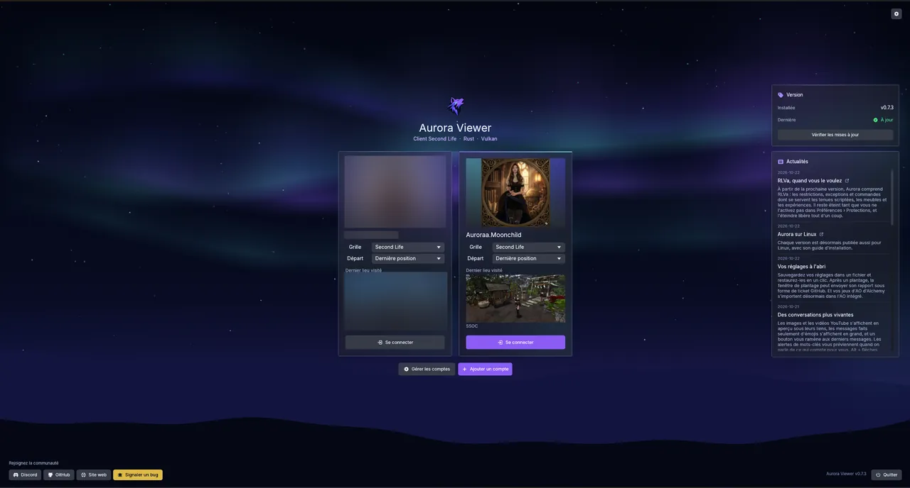
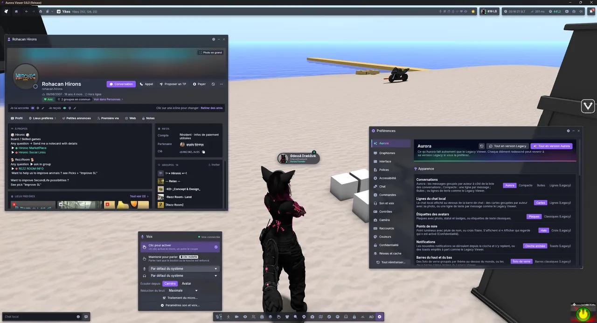

Fast, and smooth
A viewer that keeps up with you.
- Instant teleports within a region; the others show real progress
- Fewer hitches in a crowd, smoother avatars around you
- A full video memory no longer freezes the viewer
A modern Second Life viewer, written from scratch in Rust. A Vulkan renderer, a calm interface, and the world you already know.

the frame rate of a classic viewer in a busy store
the video memory for the same textures
teleports within a region, with no loading screen
a renderer built for today's graphics cards
Performance
Your graphics card finally does the work. It decides what is visible and draws thousands of objects in a handful of calls, while a dedicated render thread keeps the frames coming.
Textures and meshes decode in the background, straight into GPU memory. What you look at downloads first.
Textures are cached on disk ready for the graphics card, in about half the video memory.
A network blip no longer logs you out: Aurora reconnects you right where you were.
Features
A viewer that keeps up with you.
Modern light, without changing the look you know.
Same world, same rules, nothing to relearn.
Flat, calm and readable, arranged your way.
On Windows, at launch, Aurora offers the new version, downloads it in the background, installs it and restarts your session. Before you agree, it tells you whether your cache and settings are kept.


Photo mode
The photo mode opens full screen under a real viewfinder: autofocus that finds faces, lens rings for focal length, aperture and exposure, and a live histogram. Frame, focus, shoot.

AF-S, AF-C or manual. On an avatar, the focus locks between the eyes and follows them.
Focal length, aperture and exposure on rings you drag, or on the mouse wheel.
On by default, with focus peaking in manual focus to see exactly what is sharp.
A live histogram, exposure lock, and a level to keep the horizon straight, or tilt it.
4K by default, in PNG, JPEG or BMP, to your disk, your inventory or your profile feed.
Orbit, free or first person, and a 2 or 10 second timer to get into your pose.
Your way
Every redesigned window keeps its Legacy layout one click away, in Preferences › Aurora. Try it here.

Preferences › Aurora: one choice per window, or all at once.
Roadmap
And its native anti-aliasing, on every brand of graphics card.
Edit the textures and colours of your clothes, and make your own.
Ground that matches the materials standing on it.
News
From the next version, Aurora understands RLVa: the restrictions, exceptions and commands that scripted outfits, furniture and experiences rely on. It stays off until you turn it on in Preferences › Protections, and turning it off releases everything at once.
Read more →Every release now comes with a Linux build too, with its own install guide.
Read more →Back up your settings to a file and restore them in one click. After a crash, the crash window can send its report as a GitHub issue. And your Alchemy AO sets can now be imported into the built-in AO.
Open source
Read the code, build it yourself, and keep it free for everyone.
From scratch, on wgpu and Vulkan, while speaking to the servers exactly as they expect.
Report a bug in one click from the viewer, suggest a feature, or help translate it.
Usable for exploring, chatting and testing. Some features still await validation on the main grid.
Join the Discord GitHubFree, open source, and ready for your next login.